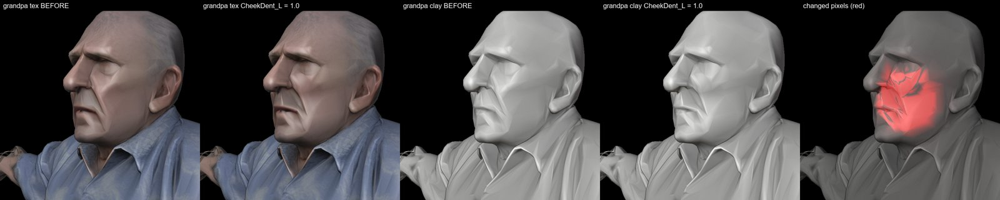
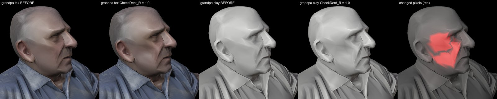
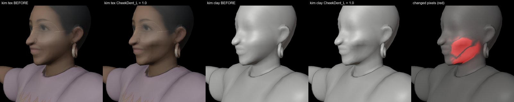
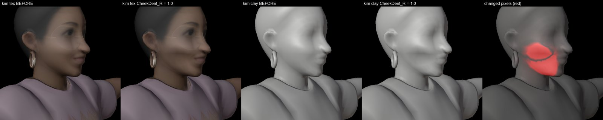
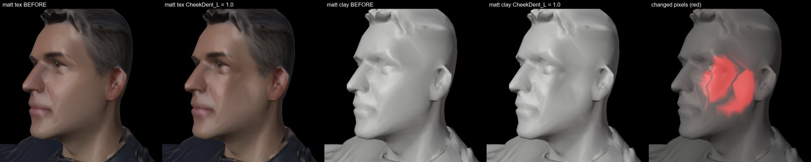
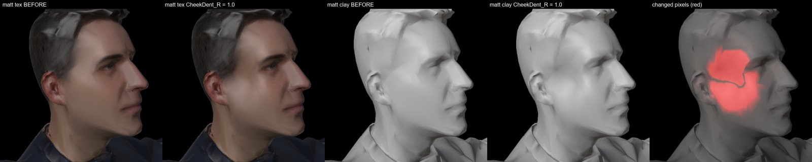
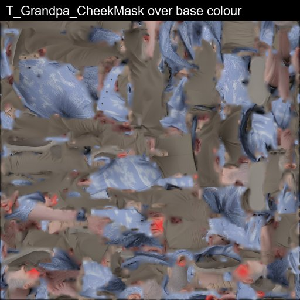
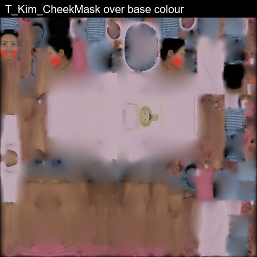
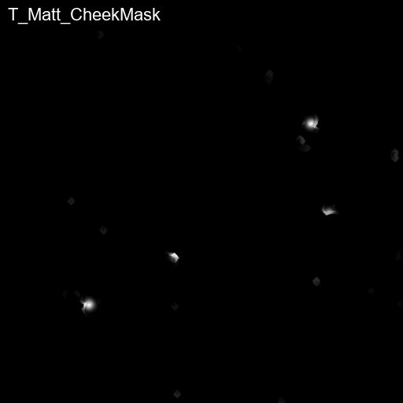
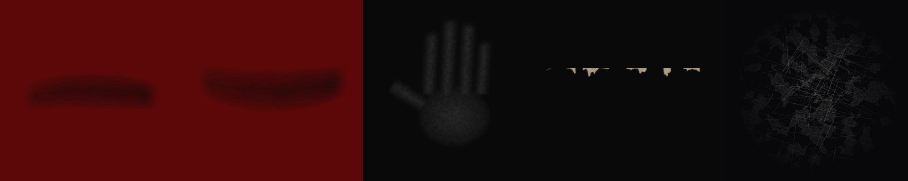

Generated headlessly: Scripts/blender_cheek_morphs.py, Scripts/render_cheek_morphs.py,
Scripts/athlete_lods.py, Scripts/arena_mobile.py, Scripts/arena_decals.py. Drawing only: bone names,
rest frames, vertex positions and vertex groups are unchanged (FBX re-import of old vs new: bone matrices and every vertex identical, max diff 0.0;
web GLB skeletons identical in three.js).
1.8 cm inward dent, 4.5 cm radius, smooth falloff, on the widest point of the face 3.5 cm below the nose tip; L/R = the athlete's own left/right. Each row: textured before/after, clay before/after (clay shows the shape the scan texture hides), changed pixels. Workbench render, Blender 5.2.






1024², 8-bit grayscale, linear, UV channel 0 (same UV as the base colour), 8 px gutter. Flush = mask.r × CheekFlush. Also on every GLB vertex as _CHEEKMASK.



Athlete LOD1/LOD2 (50 % / 25 % faces, collapse decimation) for Grandpa, Kim and Matt, each with its own CheekDent_L/R rebuilt on the decimated mesh.
Arena: 19 flat-colour materials merged into one palette material (M_ArenaPalette, 128² atlas of 16 px cells); materials 25 → 7;
the crowd 100,114 → 34070 faces. Content/Art/Exports/Arena_Mobile.glb (7.81 MB).

| mesh | slots | mobile | faces | mobile |
|---|---|---|---|---|
| AisleStairs | 2 | 1 | 1008 | 1008 |
| ApronBand | 1 | 1 | 96 | 96 |
| ApronText0 | 1 | 1 | 1582 | 1582 |
| ApronText1 | 1 | 1 | 1582 | 1582 |
| ApronText2 | 1 | 1 | 1582 | 1582 |
| ApronText3 | 1 | 1 | 1582 | 1582 |
| ArenaFloor | 1 | 1 | 284 | 284 |
| CameraJibs | 2 | 1 | 112 | 112 |
| Catwalk | 1 | 1 | 624 | 624 |
| Crowd | 2 | 2 | 100114 | 34070 |
| FootBox_blue | 1 | 1 | 4 | 4 |
| FootBox_red | 1 | 1 | 4 | 4 |
| JudgesTable | 5 | 1 | 156 | 156 |
| LEDFrame | 1 | 1 | 96 | 96 |
| LEDRing | 1 | 1 | 96 | 96 |
| MatEdge | 1 | 1 | 576 | 576 |
| Podium | 1 | 1 | 6 | 6 |
| PodiumTrim | 1 | 1 | 6 | 6 |
| PressTables | 3 | 1 | 60 | 60 |
| Roof | 1 | 1 | 284 | 284 |
| SafetyMat | 1 | 1 | 768 | 768 |
| SeatingBowl | 1 | 1 | 2944 | 2944 |
| SeatLips | 1 | 1 | 5120 | 5120 |
| SpotCans | 1 | 1 | 512 | 512 |
| SpotLenses | 1 | 1 | 160 | 160 |
| StageDeck | 1 | 1 | 284 | 284 |
| Truss | 1 | 1 | 416 | 416 |

Sole skid 01/02 (mat/deck), palm smudge (podium top), podium edge chips (edge = texture top), floor scratches (deck). RGBA, straight alpha.
| file | before | after |
|---|---|---|
| Web/assets/grandpa.glb | 593340 | 605752 |
| Web/assets/kim.glb | 286156 | 296132 |
| Web/assets/matt.glb | 0 | 430324 |
| Content/Art/Exports/Grandpa_rigged.fbx | 891596 | 1050812 |
| Content/Art/Exports/Grandpa_rigged.glb | 36888832 | 38621876 |
| Content/Art/Exports/Kim_rigged.fbx | 20021660 | 20155484 |
| Content/Art/Exports/Kim_rigged.glb | 21644852 | 21711364 |
| Content/Art/Exports/Matt_rigged.fbx | 22992476 | 23196588 |
| Content/Art/Raw/Grandpa_rigged.blend | 1004187 | 1113740 |
| Content/Art/Raw/Kim_rigged.blend | 19108482 | 19111102 |
| Content/Art/Raw/Matt_rigged.blend | 23023588 | 23338114 |
| Content/Art/Exports/Grandpa_LOD1.fbx | 487420 | 572108 |
| Content/Art/Exports/Grandpa_LOD2.fbx | 281644 | 327244 |
| Content/Art/Exports/Kim_LOD1.fbx | 240044 | 309340 |
| Content/Art/Exports/Kim_LOD2.fbx | 157020 | 184300 |
| Content/Art/Exports/Matt_LOD1.fbx | - | 740236 |
| Content/Art/Exports/Matt_LOD2.fbx | - | 412972 |
| Content/ (du) | 676 MB | 579M |